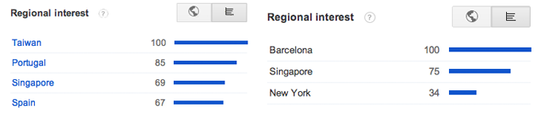
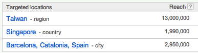
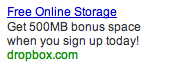
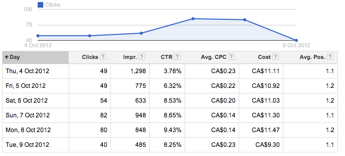
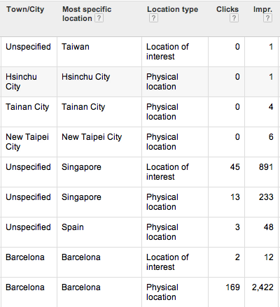
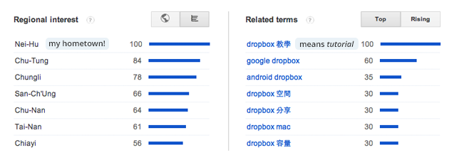

This is the Google Adwords campaign which helped me earn maximum bonus space for Dropbox in 6 days.
The idea was to show a Google ad with my referral link to anyone that looks up ‘Dropbox’ and related keywords. If someone clicks through my link and signs up+installs Dropbox, we both get bonus space! (Win-win!)
First, I looked up Google Trends to see where the keyword ‘Dropbox’ was searched. Based on high regional interests, I picked Taiwan, Barcelona and Singapore as the targeted geographic locations.

Geographic reach in campaign settings:
An example ad for search queries of 'Dropbox' and/or any of the keywords I entered (e.g. online storage, cloud storage, file hosting).

In 6 days, my ads were shown 4,987 times and had 354 clicks. The click-through rate is 7.1%.
In total, 33 people signed up, and 21 people installed the desktop app, giving me an extra 10.5 GB of space. (I stopped the campaign when I earned all the bonus space.)
Overall Stats: 
Ad Dimensions by Geographic:
It was surprising that so few impressions were from Taiwan, although Taiwan has the most search interest.
After chatting with the Google AdWords help team and going through the Ad Dimensions analysis, I realized the low click-through rate and low impressions in Taiwan were caused by 1. how I grouped the keywords, 2. the language of the keywords and ads.
Most impressions from Spain and Singapore because people from these regions were searching ‘download dropbox’, which was one of my keywords. My ads did not show up in Taiwan because the keywords were in English and they didn't match what the Taiwanese people were searching.
Search terms in Taiwan on Google Trends:
Even though improvements can be made to optimize this Adwords campaign, I reached my goal of earning maximum Dropbox space and learned a few things.
It was interesting that Taiwan is the location with the highest regional interest and highest reach (13 million) among the targeted locations.
Yet, the Taiwanese have to search for tutorials because Dropbox doesn’t have Traditional Chinese UI. It would really help Dropbox to reach users in Taiwan and China/Hong Kong (when it's not blocked).
To use something as simple as Dropbox shouldn’t require tutorials. The user experience to install and use Dropbox would be more perfect if potential users don’t have to follow tutorials.
In addition, non-official tutorials involve the possibility that may frustrate users if they are not written for the current version of Dropbox. Secondly, people might look for alternatives if they don’t want to follow through the tutorials.
I would be very happy to help with the Chinese translation for Dropbox, in addition to being a Product Designer. In fact, I helped translate Plug.DJ into Traditional Chinese, so I’m fairly experienced in translating UI elements.
P.s. This campaign is inspired by Alex Shipillo, who blogged about how he earned $200 uber credits with his Google Adwords campaign.